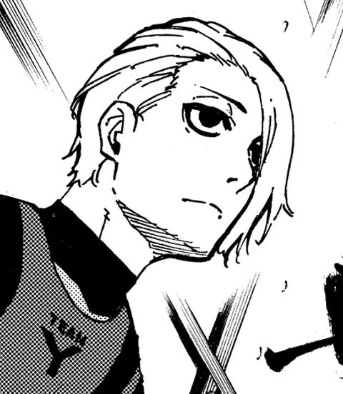

Blue Lock — outros jogadores
Hyuga Koshiba
Hyuga Koshiba: jogador do projeto Blue Lock. Estreia no mangá: capítulo 10.
- Posição
- Atacante
- Ranking Blue Lock
- 257º
- Números de camisa
- 11 (1ª Seleção)
- Altura
- 182 cm
- Estreia no mangá
- Capítulo 10
Trajetória: fase → time → nº
- 1ª Seleção → Time Y → nº 11
Fonte: Blue Lock Wiki – Hyuga Koshiba (dados do quadro de informações; campos ausentes na wiki foram omitidos)